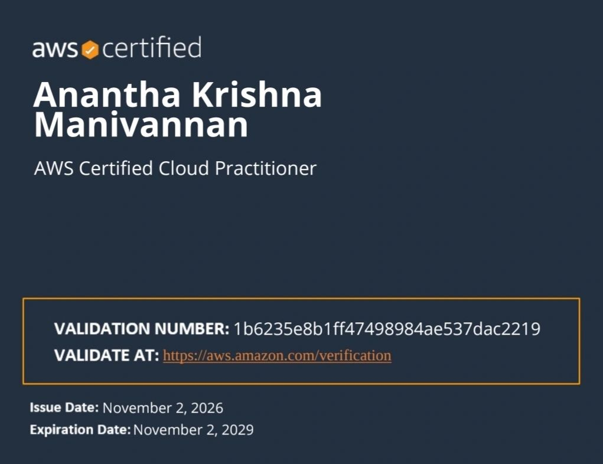
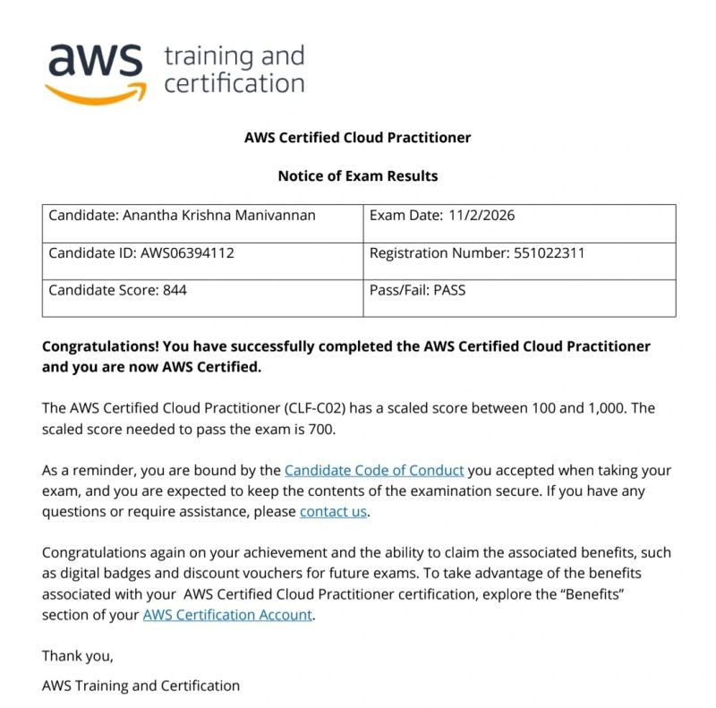
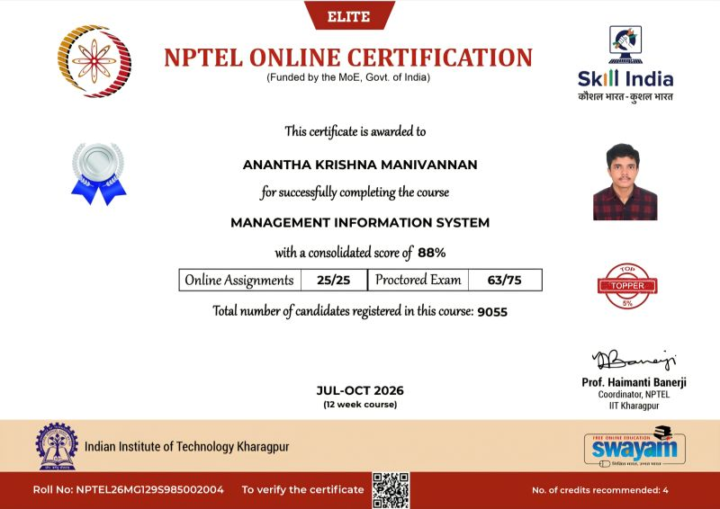
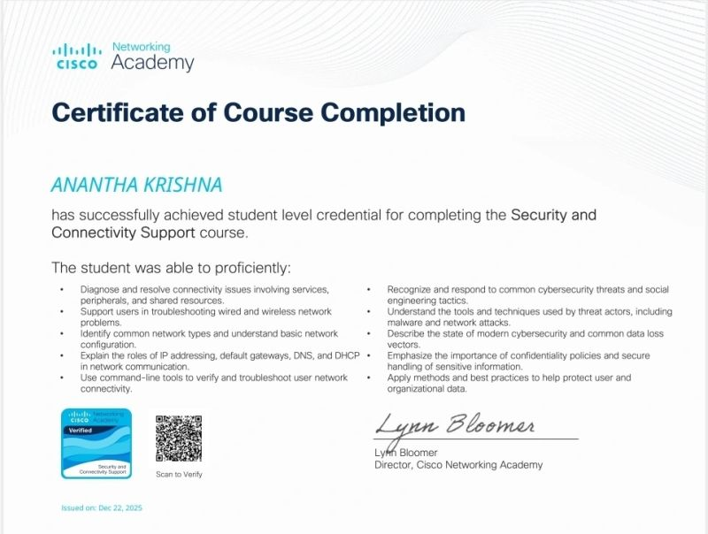
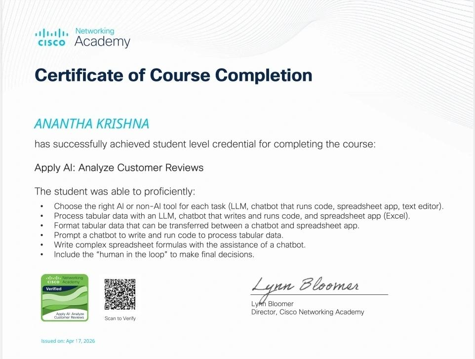

Credentials, not just course lists.
Formal professional credentials are presented separately from short-course completions and training badges. Supplied certificate documents and badge images are used where mapped.
Professional certification · formal examination
AWS Certified Cloud Practitioner

AWS Certified Cloud Practitioner (CLF-C02)
Exam voucher · Score 844/1000 · Passed
Issued 2 November 2026 · Expires 2 November 2029
Separate examination score report:

NPTEL · IIT Kharagpur
Online certifications
.png)
Natural Language Processing
57% · Jan–Apr 2026
.png)
Blockchain and its Applications
64% · Elite · Jan–Apr 2026

Management Information System
88% · Elite + Silver · Top 5% · Jul–Oct 2026
Oracle University
Professional certification
.png)
Oracle Fusion Cloud Applications SCM Process Essentials Certified – Rel 1
Oracle Certified · 9 October 2026
Cisco · IBM · Analytics Vidhya
Course completion certificates
.png)
Introduction to AI & ML
Analytics Vidhya · 28 November 2025
.png)
Introduction to Modern AI
Cisco Networking Academy · 21 December 2025

Security and Connectivity Support
Cisco Networking Academy · 22 December 2025

Apply AI: Analyze Customer Reviews
Cisco Networking Academy · 17 April 2026
Apply AI: Update Your Resume
Cisco Networking Academy · 17 April 2026
.png)
Natural Language Processing and Computer Vision
IBM SkillsBuild · 25 December 2025
.png)
Artificial Intelligence Fundamentals
IBM SkillsBuild · 31 December 2025
AWS Educate
Training badges
.png)
Cloud Computing 101
AWS Educate training badge
.png)
Machine Learning Foundations
AWS Educate training badge
.png)
Introduction to Generative AI
AWS Educate training badge
AWS Training & Certification
Additional course completions
Introduction to Generative AI: Art of the Possible
19 April 2026 · Course completion
Job Roles in the Cloud
19 April 2026 · Course completion
Sustainability Strategies with Generative AI
19 April 2026 · Course completion

Amazon Quick Automate – Building Intelligent Workflows
19 April 2026 · Course completion